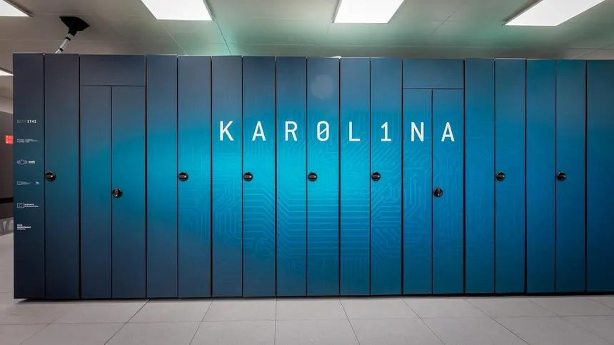

Kapitola 6: Superpočítač
Superpočítač je velmi výkonný počítač, dnes nejčastěji tvořený clusterem propojených běžných počítačů s vysokorychlostní sítí. V minulosti patřily mezi nejrychlejší superpočítače Sunway TaihuLight, Summit a japonský Fugaku. Od roku 2022 je nejvýkonnějším a zároveň nejúspornějším superpočítačem Frontier, který dosahuje výkonu přes 1 exaflops. Mezi významné projekty patří také gridový cluster Folding@home. V roce 2025 byl spuštěn nejrychlejší superpočítač v Evropě v německém Jülichu.

Charakteristika
- Neexistuje přesná hranice, od kdy je počítač považován za superpočítač; výkon se měří v jednotkách FLOPS a jejich násobcích (např. TFLOPS).
- Nejrozšířenějším operačním systémem superpočítačů je Linux a další unixové systémy díky své otevřenosti.
- Superpočítače slouží k řešení velmi výpočetně náročných úloh, jako je fyzikální modelování, předpověď počasí, výzkum genomu či kryptoanalýza.
- Využívají se téměř ve všech vědních oborech k tvorbě a testování složitých modelů.
Architektura moderních superpočítačů
- Moderní superpočítače jsou tvořeny clustery běžných počítačů propojených vysokorychlostní sítí, což je levnější než jeden specializovaný stroj.
- Nejvýkonnější superpočítače využívají architekturu MIMD clusterů s procesory typu SIMD, které se liší počtem jednotek, procesorů a paralelních instrukcí.
- Výpočty probíhají na multiprocesorových systémech využívajících technologie SMP a NUMA.
- Pro zvýšení výkonu a efektivity se často používají také grafické procesory (GPGPU).
Distribuovaný výpočet
- Superpočítač může být nahrazen i distribuovaným výpočtem, kdy jsou propojeny běžné osobní počítače přes internet.
- Tento přístup je vhodný pro úlohy, které lze snadno paralelizovat a nevyžadují rychlou komunikaci mezi uzly.
- Mezi známé projekty patří SETI@home a platforma BOINC, využívající volný výpočetní výkon počítačů.
- Projekt Folding@home během pandemie covidu-19 dosáhl výkonu přes 1 EFLOPS, čímž překonal výkon nejvýkonnějších superpočítačů.
Superpočítače se speciálním určením
- Deep Blue: vytvořen pro hraní šachů, jako první stroj porazil v této hře člověka (Garryho Kasparova)
- GRAPE: vytvořen pro úlohy astrofyziky a molekulární dynamiky
- Deep Crack: vytvořen k prolomení šifry DES